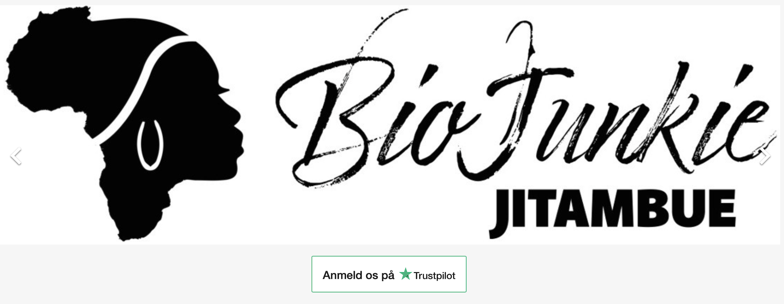
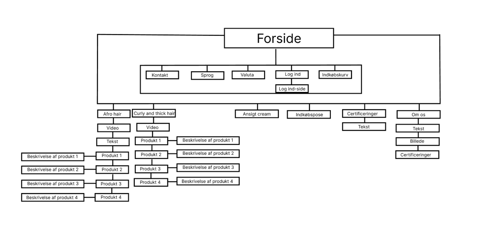
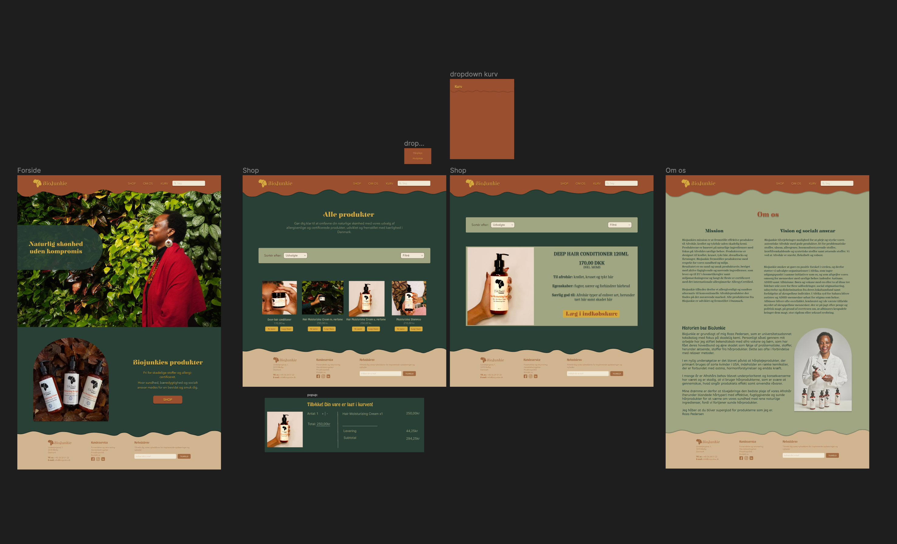
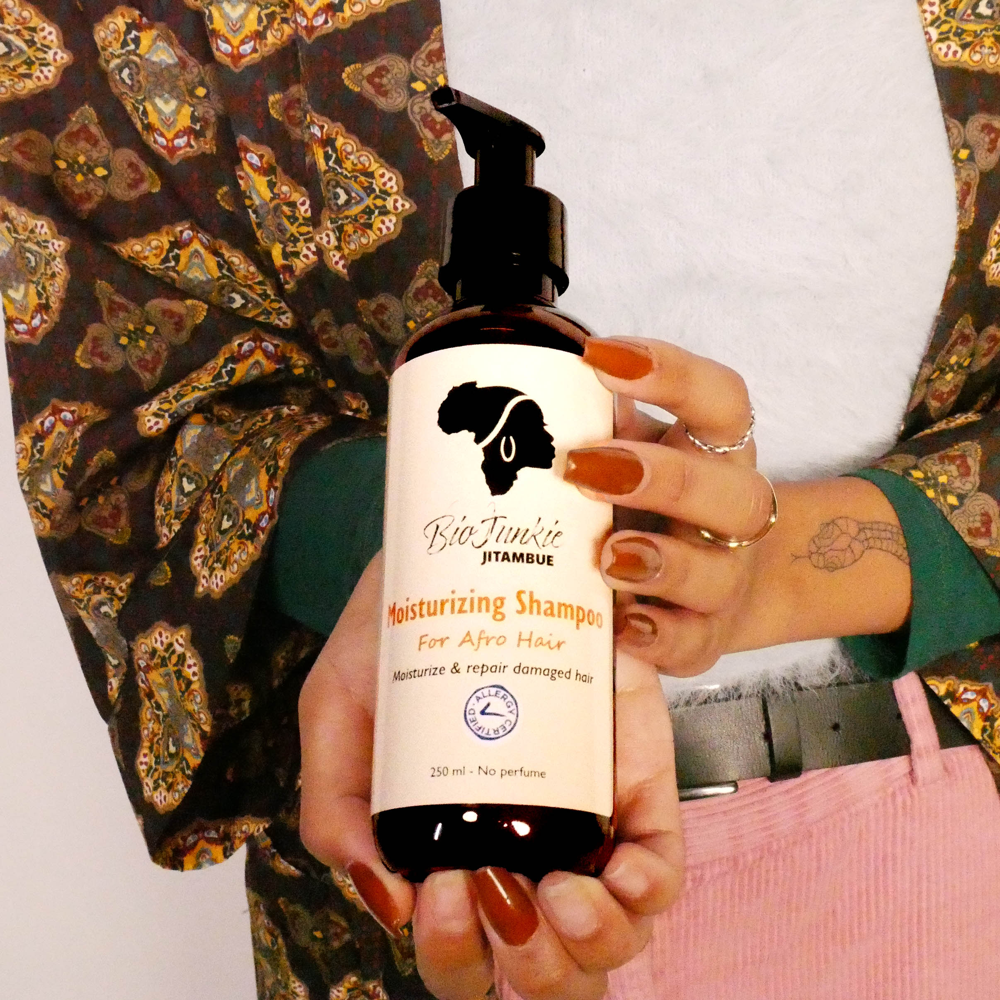
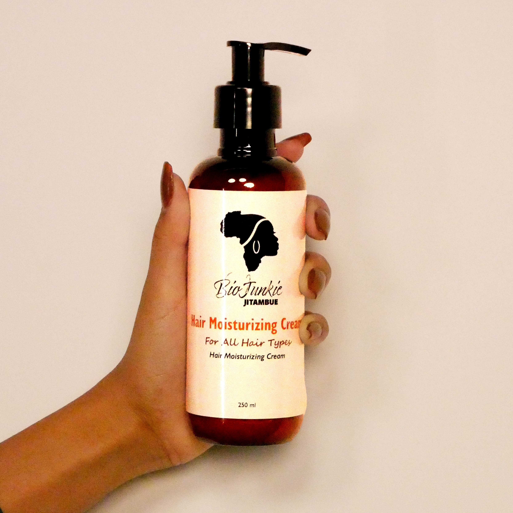
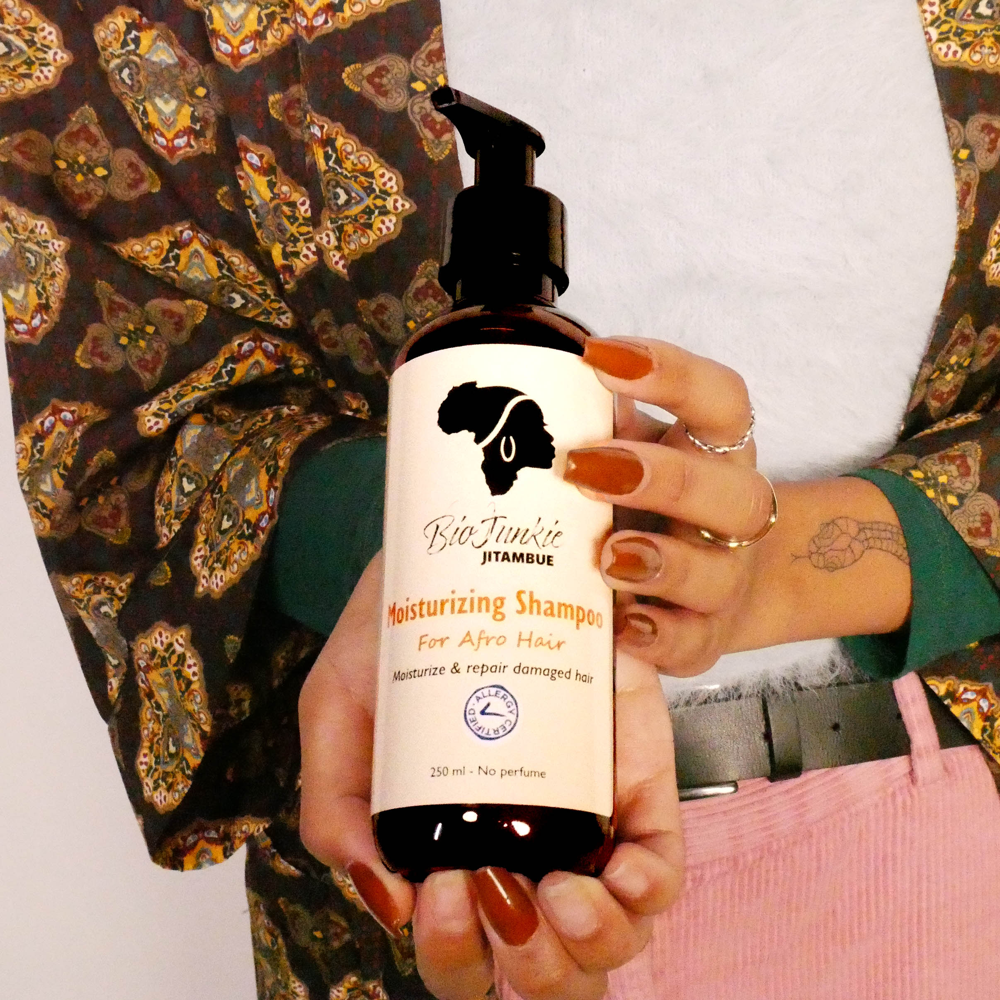
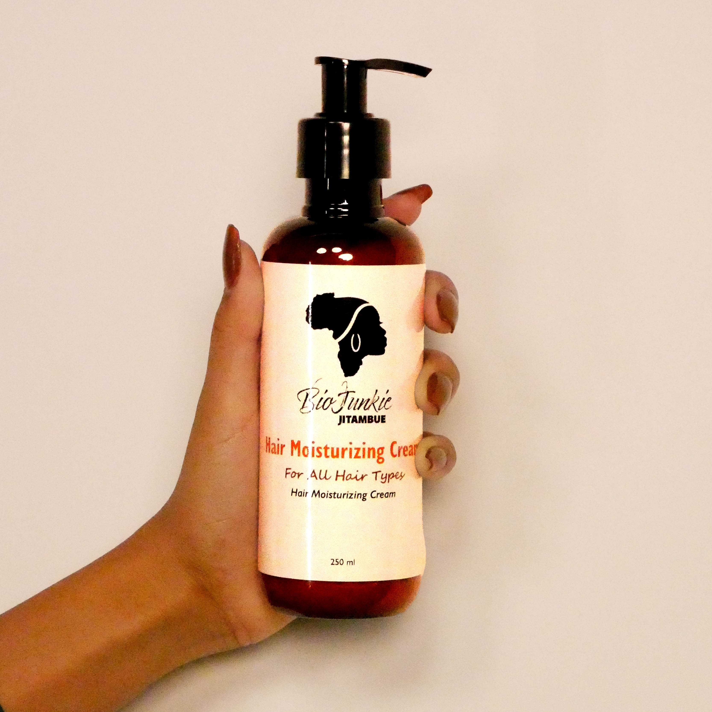

Tema 5
Biojunkie
Målet for Tema 5 var at blive sat i arbejde med relation til kunde og virksomhed. Det mål blev realiseret via opgaven, der gik ud på, at redisgne en virksomheds hjemmeside.
Biojunkie’s udgangspunkt var specialiserede hårprodukter til afrohår uden brug af skadelige kemikalier og materialer både for hår, krop og miljøet. Biojunkie havde som mål at styrke og skåne håret og mennesket og samtidig gøre en forskel for miljøet. Det var en erstatning for miljøskadelige produkter til folk med hår, der havde bug for pleje. Herudover er der mange produkter i samme kategori, der benytter kræftfremkaldende kemikalier, hvilket Biojunkie undlod. Biojunkie’s valg af materialer pegede mod folk med afrohår, der gik op i klimaet. Ud fra dette var målgruppen i højere grad unge mennesker med afrohår.
Sitemap
Brugerrejsen kunne på denne måde tage udgangspunkt i de værdier, der var unikke for Biojunkie. I stikord kunne det f.eks. være ord som organisk, plejende, levende og progressivt. Vi ville designe en hjemmeside, der gjorde budskabet og egenskaberne af produktet tydeligt uden at læse dem. Det inkluderede at benytte farver der pegede mod naturen og liv, unikke elementer i forgrunden, der skabte en dybde i hjemmesiden og dermed eliminerede det ‘flade’ design, mm. På denne måde ville vi oversatte produkternes unikke egenskaber til det visuelle.

Moodboard & styletile
Hi Fi Prototype overview
Galleri
 


